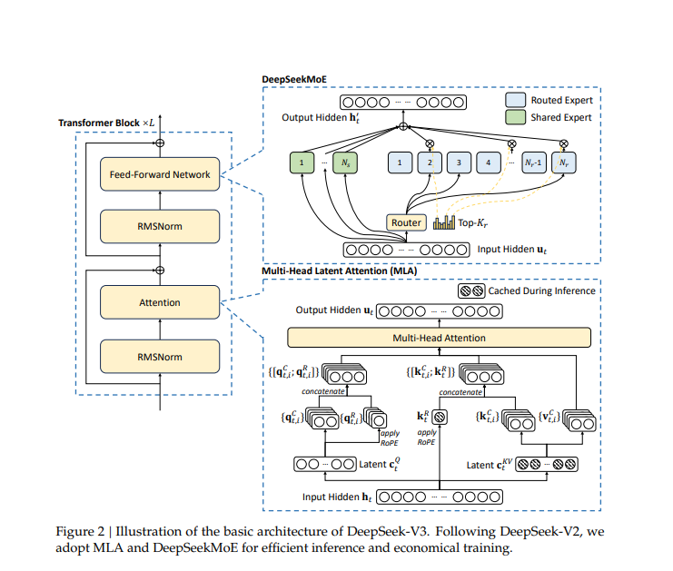
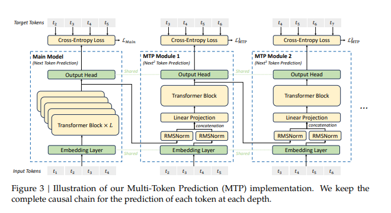
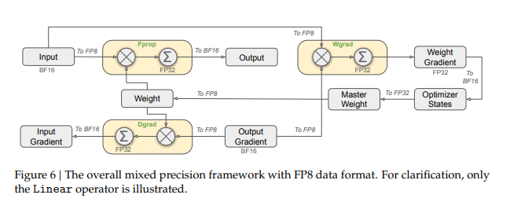
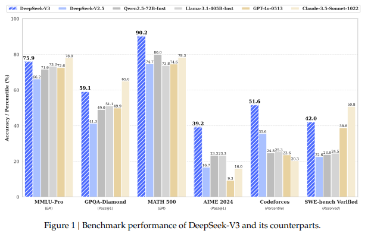

DeepSeek-V3 技术解析：无辅助损失负载均衡与多 Token 预测
引言
DeepSeek-V3 是深度求索于 2024 年 12 月发布的旗舰级开源大语言模型。作为 DeepSeek-V2 的继承者，V3 在保留 MLA 和 DeepSeekMoE 两大核心架构的基础上，引入了多项突破性创新——无辅助损失负载均衡（Auxiliary-Loss-Free Load Balancing）、多 Token 预测（Multi-Token Prediction, MTP）训练目标，以及 FP8 混合精度训练框架。最终模型在仅消耗 278.8 万 H800 GPU 小时的情况下完成训练，且全程未出现任何不可恢复的 Loss 尖峰。本文将从架构设计、训练优化和推理部署三个维度深入解析 DeepSeek-V3。
📄 论文：DeepSeek-V3 Technical Report
https://arxiv.org/abs/2412.19437 · arXiv:2412.19437
模型概览
DeepSeek-V3 的核心规格如下：
- 总参数：671B（含 MTP 模块为 685B）
- 激活参数：37B per token
- 架构：MoE Transformer（MLA + DeepSeekMoE）
- 隐藏维度：$d = 7168$，注意力头 $n_h = 128$，每头维度 $d_h = 128$
- 专家配置：256 个路由专家（Top-8 激活）+ 1 个共享专家
- 上下文长度：128K tokens
- 训练数据：14.8 万亿 tokens
- 训练成本：2.788M H800 GPU 小时
- 优化器：AdamW，cosine 学习率调度
- FFN 激活：SwiGLU
- 开源协议：MIT
x₁, x₂, ..., xₜ")] end subgraph Embed["Token Embedding
d = 7168"] E["Embedding Layer"] T --> E end subgraph Block["Transformer Block × N
(每个 Block 相同结构)"] direction TB LN1["LayerNorm"] --> MLA["Multi-head Latent Attention
n_h = 128, d_h = 128"] MLA --> RES1["残差连接 +"] RES1 --> LN2["LayerNorm"] LN2 --> MOE["DeepSeekMoE FFN
1 Shared + 256 Routed
Top-8 激活, SwiGLU"] MOE --> RES2["残差连接 +"] E --> LN1 end subgraph Output["输出头"] O["LayerNorm → Linear → Softmax
→ Logits / Loss"] end Block --> Output Output --> PRED[("预测 Token
t₁, t₂, ..., tₙ")]
图 1：DeepSeek-V3 整体架构 — 每个 Transformer Block 包含 MLA + DeepSeekMoE，残差连接环绕，最终经输出头产生预测
架构设计：继承与创新
DeepSeek-V3 的整体架构仍基于 Transformer 框架，沿用了 DeepSeek-V2 中验证有效的 MLA 和 DeepSeekMoE 设计。在此基础上，V3 引入了两项关键创新。
MLA：高效的注意力机制
DeepSeek-V3 延续了多头潜在注意力（Multi-head Latent Attention, MLA）架构。其核心思想是对 Attention 的 Key 和 Value 进行低秩联合压缩，将完整的 K/V 矩阵投影到更低维的隐空间中。
对于第 $t$ 个 Token 的注意力输入 $\mathbf{h}_t \in \mathbb{R}^d$，MLA 首先通过两个降维矩阵将 Key 和 Value 压缩到低维隐空间：
其中 $\mathbf{W}_{DK}, \mathbf{W}_{DV} \in \mathbb{R}^{d_c \times d}$ 是降维矩阵，$d_c \ll d$ 是隐空间维度。推理时仅需缓存压缩后的 $(\mathbf{k}_t^C, \mathbf{v}_t^C)$ 而非完整的 K/V，KV Cache 存储从 $2 \times n_h \times d_h$ 降至 $2 \times d_c$——使存储需求降低 $4$-$8$ 倍。在计算注意力时，再通过升维矩阵重建出完整的 Key 和 Value：
其中 $\mathbf{W}_{UK}, \mathbf{W}_{UV} \in \mathbb{R}^{d_h n_h \times d_c}$。最终注意力计算为标准 Scaled Dot-Product Attention，配合 RoPE 位置编码。注意 MLA 对 Query 也采用类似的分割策略以兼容 RoPE：
hₜ ∈ ℝ⁷¹⁶⁸")] end subgraph SplitQKV["Q/K/V 拆分"] Q_W["W_Q
d → d_q n_h
含 RoPE 拆分"] K_W["W_DK
d → d_c"] V_W["W_DV
d → d_c"] H --> Q_W H --> K_W H --> V_W end subgraph Compress["低秩联合压缩"] K_C[("K Latent
kₜ^C ∈ ℝ^{d_c}")] V_C[("V Latent
vₜ^C ∈ ℝ^{d_c}")] K_W --> K_C V_W --> V_C end subgraph Cache["KV Cache (推理时)"] CACHE[("缓存 k^C, v^C
仅 d_c × 2 per token
存储降至 1/4 ~ 1/8")] K_C --> CACHE V_C --> CACHE end subgraph Decompress["在线解压缩"] K_DEC["W_UK
d_c → d_h n_h"] V_DEC["W_UV
d_c → d_h n_h"] CACHE --> K_DEC CACHE --> V_DEC end subgraph RoPE["RoPE 处理"] Q_R["qₜ^R = RoPE(W_QR hₜ)"] Q_C["qₜ^C = W_QC hₜ"] Q_W --> Q_R Q_W --> Q_C end subgraph AttnOut["Attention 计算"] ATT[("Score = Softmax(Q·K/√d_h)
Output = Σ score · V
逐头计算后拼接")] Q_R --> ATT Q_C --> ATT K_DEC --> ATT V_DEC --> ATT end subgraph Output["输出投影"] O_L["W_O"] ATT --> O_L end O_L --> H_OUT[("hₜ' ∈ ℝ⁷¹⁶⁸")]
图 2：MLA 注意力机制详解 — K/V 经低秩压缩后缓存（推理时仅存 d_c 维隐向量），Q 拆分 RoPE 部分和非 RoPE 部分，在线解压缩后计算标准多头注意力

论文原图 DeepSeek-V3 MLA（Multi-head Latent Attention）详细架构
# MLA 的低秩联合压缩
def mla_forward(h, W_dk, W_dv, W_uk, W_uv):
# h: [batch, seq_len, d] 输入
# 联合压缩 K 和 V
k_latent = h @ W_dk # [batch, seq_len, latent_dim]
v_latent = h @ W_dv
# 缓存在隐空间中
cache = (k_latent, v_latent)
# 解压缩回完整维度
k = k_latent @ W_uk # [batch, seq_len, d_k]
v = v_latent @ W_uv
return attention(h, k, v), cacheDeepSeekMoE：细粒度专家设计
在前馈网络部分，DeepSeek-V3 采用细粒度的 MoE 架构，配置为 256 个路由专家 + 1 个共享专家，每个 Token 激活 Top-8 个路由专家以及共享专家。与传统 MoE（如 GShard）将整个 FFN 作为一个专家不同，DeepSeekMoE 将 FFN 中间维度拆分为更小的专家单元，并额外隔离出共享专家处理所有 Token 共有的模式。
设 $\mathbf{u}_t$ 为第 $t$ 个 Token 的 FFN 输入，FFN 使用 SwiGLU 激活函数。则 FFN 输出 $\mathbf{h}_t'$ 的计算方式为：
门控值 $g_{j,t}$ 通过 Top-8 路由计算，其中 $\mathbf{e}_j$ 是第 $j$ 个专家的路由中心向量：
FFN 内部使用 SwiGLU 结构，即门控线性单元配合 Swish 激活：$\text{FFN}(x) = (\text{Swish}(x W_g) \odot x W_u) W_d$。每个 Token 激活 8 个路由专家（约 $8/256 = 3.1\%$ 的专家参数）加上 1 个共享专家，在保持计算高效的同时，使 671B 总参数中仅 37B 被激活。
Linear(7168, 256)"] Rscore["亲和度分数
scores ∈ ℝ²⁵⁶"] Rbias["+ 可学习偏置 b_i
(无辅助损失)"] Rsoft["Softmax 归一化"] Rtop["Top-8 选择"] X --> R R --> Rscore Rscore --> Rbias Rbias --> Rsoft Rsoft --> Rtop end subgraph SharedExpert["共享专家（始终激活）"] SHARED["1 × SwiGLU FFN
计算所有 Token
的通用模式"] end subgraph RoutedExperts["路由专家池（256 个）"] EXP1["Expert 1
SwiGLU FFN"] EXP2["Expert 2
SwiGLU FFN"] EXP3["Expert ...
SwiGLU FFN"] EXP256["Expert 256
SwiGLU FFN"] end subgraph Activation["Top-8 稀疏激活
仅 8/256 = 3.1% 专家参与"] ACT1["Expert ₁₂"] ACT2["Expert ₃₇"] ACT3["Expert ..."] ACT8["Expert ₂₀₃"] Rtop --> ACT1 Rtop --> ACT2 Rtop --> ACT3 Rtop --> ACT8 end subgraph Fused["输出融合"] F["hₜ' = Shared(xₜ) + Σ score_i × Expert_i(xₜ)"] SHARED --> F ACT1 --> F ACT2 --> F ACT3 --> F ACT8 --> F end X --> SHARED X --> RoutedExperts F --> Out[("输出 hₜ'
参数总量 671B
实际激活 37B")]
图 3：DeepSeekMoE 详细架构 — 1 个共享专家处理通用模式，256 个路由专家各司其职，经 Router（含可学习偏置 b_i）选择 Top-8 后加权融合。FFN 内部使用 SwiGLU 激活
核心创新一：无辅助损失负载均衡
这是 DeepSeek-V3 最引人注目的创新之一。在传统的 MoE 模型中，路由网络往往倾向于将 Token 集中分配给少数"强势"专家，导致其他专家得不到充分训练（即路由坍缩）。以往的解决方案是通过辅助损失（Auxiliary Loss）来惩罚不均衡分配，但辅助损失过大会损害模型性能。
DeepSeek-V3 提出了一种全新的思路：不为负载均衡引入额外的损失项，而是为每个专家添加一个可学习的偏置项 $b_j$，在路由计算时直接加到该专家的亲和度分数上：
偏置项 $b_j$ 的更新策略简单而优雅——不与主损失产生梯度耦合，而是通过统计方式动态调整。在 training 中每隔一定步数统计每个专家的 Token 分配比例，并将其与均匀分布目标比较逐减调整 $b_j$。这种机制完全不需要额外的损失函数，避免了辅助损失对模型性能的负面影响。
反复选择少数专家"] P2["被冷落的专家
得不到充分训练"] P1 --> P2 end subgraph Traditional["传统方案：Auxiliary Loss"] T1["引入辅助损失
L_aux = α · CV(load)"] T2["路由器被迫均匀分配"] T3["代价：辅助损失过大
→ 损害模型质量"] P2 --> T1 T1 --> T2 T2 --> T3 end subgraph DeepSeek["DeepSeek-V3：无辅助损失方案"] D1["每个路由专家配备
可学习偏置 b_i"] D2["路由分数 =
Softmax(scores + b_i)"] D3{"专家 i 负载检查"} D4["b_i ← b_i - ε
降低选中概率"] D5["b_i ← b_i + ε
提高选中概率"] D6["最终效果：
负载均衡 ✓
模型质量无损 ✓"] P2 --> D1 D1 --> D2 D2 --> D3 D3 -->|"p_i > 目标值"| D4 D3 -->|"p_i < 目标值"| D5 D4 --> D6 D5 --> D6 end style DeepSeek fill:#1a2a1a,stroke:#34d399,color:#e8e4dd style Traditional fill:#2a1a1a,stroke:#e879f9,color:#e8e4dd
图 4：无辅助损失负载均衡 — 对比传统 Auxiliary Loss 方案与 V3 的可学习偏置方案。b_i 通过专家负载统计动态调整，在保证负载均衡的同时不产生额外梯度干扰
# 无辅助损失负载均衡
def expert_routing(x, router, shared_expert, routed_experts, biases, top_k=8):
# x: token 输入
# biases: 256 个路由专家各自的可学习偏置
scores = router(x) # [256]
scores = scores + biases # 注入偏置实现负载均衡
top_k_scores, top_k_idx = topk(scores, top_k)
# 共享专家始终激活
output = shared_expert(x)
# 仅计算 Top-K 路由专家的输出
for idx, score in zip(top_k_idx, top_k_scores):
output += routed_experts[idx](x) * score
return output注：DeepSeek-V3 路由代码风格示意，实际实现为批量计算
核心创新二：多 Token 预测（MTP）
传统的因果语言模型在每一步只预测下一个 Token。DeepSeek-V3 引入多 Token 预测训练目标，让模型在每个位置同时预测后续 $D$ 个 Token（论文中 $D=1$，即额外预测 1 个未来 Token）。MTP 模块共享主模型的 Embedding 和输出头（Output Head），仅使用独立的 Transformer Block 处理各深度的预测任务——这种设计确保了 MTP 模块在推理时可无缝作为 Draft Model 用于投机解码。
MTP Module 的输入由主模型的共享隐藏状态 $\mathbf{h}_t$ 和对应 Token 的嵌入拼接而成：
其中输出头 $\mathbf{W}$ 与主模型共享。对应的交叉熵损失为：
总训练损失为：
MTP 带来了双重收益：
- 训练信号更密集：每个位置产生 D 倍的监督信号，加速收敛并改善表征质量
- 投机解码加速：MTP Module 在推理时可作为轻量级 Draft Model 使用，配合投机解码（Speculative Decoding）提升生成吞吐
MLA + MoE Blocks"] M_MLA --> M_H["共享 Hidden State hₜ"] subgraph MainHead["主预测头"] P0["Linear + Softmax
(共享 Output Head)"] M_H --> P0 P0 --> L0["CE Loss: 预测 xₜ₊₁"] end subgraph MTPModule["MTP Module (D=1)"] MTP_IN["输入: [hₜ; Emd(xₜ)]
(隐藏状态 + 当前 Token 嵌入)"] MTP_T["独立 Transformer Block"] MTP_P["Linear + Softmax
(共享 Output Head)"] MTP_IN --> MTP_T --> MTP_P --> L1["CE Loss: 预测 xₜ₊₂"] M_H --> MTP_IN end subgraph TotalLoss["总损失"] TL["L = L_main + λ · L_mtp"] L0 --> TL L1 --> TL end MTPModule -->|"梯度回传
影响主模型表征"| M_MLA end subgraph InferencePhase["推理阶段"] direction LR DRAFT["MTP Module
作为 Draft Model"] --> SD["投机解码
Speculative Decoding"] SD --> VERIFY["主模型验证
一次验证多个 Token"] VERIFY --> SPEED["↓
生成速度提升"] end MTPModule -.->|"推理时切换"| DRAFT
图 5：多 Token 预测（MTP）— 左（训练）：MTP Module 接收共享隐藏状态和 Token 嵌入，预测下一位置，梯度回传影响主模型；右（推理）：MTP Module 作为 Draft Model 接入投机解码流程加速生成

论文原图 DeepSeek-V3 多 Token 预测（MTP）训练框架
# MTP 多 Token 预测示意 (D=1)
def mtp_loss(model, tokens, mtp_module):
# tokens: [batch, seq_len]
main_logits = model(tokens) # 主模型预测 next token
main_loss = cross_entropy(main_logits, tokens[:, 1:])
hidden = model.get_hidden(tokens) # 共享主干表征
# MTP Module 预测再下一个 Token
mtp_input = concat(hidden, embed(tokens[:, 1:]))
mtp_logits = mtp_module(mtp_input)
mtp_loss = cross_entropy(mtp_logits, tokens[:, 2:])
return main_loss + 0.3 * mtp_loss # MTP 损失按权重加权训练基础设施与 FP8 混合精度
DeepSeek-V3 的训练效率是另一个重要亮点。模型仅消耗 278.8 万 H800 GPU 小时，训练全程使用 2048 块 NVIDIA H800 GPU，在 14.8T Token 上完成预训练。相比同等规模模型大幅降低，这得益于以下几项关键优化。
FP8 混合精度训练
DeepSeek-V3 首次在超大规模模型上验证了 FP8 混合精度训练的可行性和有效性。通过精心设计的量化策略，在前向和反向计算的核心矩阵乘中使用 FP8，在保持模型精度的同时显著降低了显存占用和计算开销。
FP8 有两种常用的指数位配置：E4（4 位指数，3 位尾数，动态范围大精度低）和 E5（5 位指数，2 位尾数，动态范围小精度高）。DeepSeek-V3 根据张量分布特征在不同位置使用不同配置：
在前向传播中，权重和激活以 FP8 存储，矩阵乘累加后以 BF16 输出：
梯度计算同样在 FP8 下完成，但主权重（Master Weights）和优化器状态保持 FP32 精度，仅在更新步将 FP32 权重量化回 FP8 供下一轮前向使用。
X FP8"]:::fp8 --> FW2["权重
W FP8"]:::fp8 FW2 --> FW3["FP8 矩阵乘
累加后转 BF16"]:::bf16 FW3 --> FW4["激活输出
Y BF16"]:::bf16 end subgraph Backward["反向传播"] BW1["输入梯度
dY BF16"]:::bf16 --> BW2["权重梯度
dW FP8 量化"]:::fp8 BW2 --> BW3["激活梯度
dX BF16"]:::bf16 FW4 --> BW1 end subgraph Optimizer["优化器状态"] OPT1["Master Weights
FP32"]:::fp32 OPT2["Momentum
FP32"]:::fp32 OPT3["Variance
FP32"]:::fp32 end subgraph Update["权重更新 (AdamW)"] UP1["W_master = W_master - lr · m/(√v + ε)
FP32 精度"]:::fp32 UP2["量化回 FP8
W_fp8 = cast(W_master)"]:::fp8 OPT1 --> UP1 OPT2 --> UP1 OPT3 --> UP1 UP1 --> UP2 UP2 -->|"下一轮前向"| FW2 BW2 --> UP1 end classDef fp8 fill:#0d2a0d,stroke:#34d399,color:#e8e4dd,stroke-width:2px classDef bf16 fill:#0d0d2a,stroke:#60a5fa,color:#e8e4dd,stroke-width:2px classDef fp32 fill:#2a0d0d,stroke:#e879f9,color:#e8e4dd,stroke-width:2px
图 6：FP8 混合精度训练 — 前向和反向中的核心矩阵乘在 FP8 下完成，累加后转 BF16 传播。主权重和优化器状态保持 FP32 精度，更新后量化为 FP8 供下一轮使用

论文原图 DeepSeek-V3 FP8 混合精度训练框架
算法-框架-硬件协同设计
跨节点 MoE 训练中的通信开销是主要瓶颈。DeepSeek-V3 通过算法、框架和硬件的协同设计，几乎实现了计算与通信的完全重叠。
设整个 batch 的 Token 总数为 $B$，专家总数为 $N$，GPU 节点数为 $M$。在标准的 All-to-All 通信模式下，每个 GPU 需要将约 $B \cdot \frac{1}{M}$ 个 Token 的隐藏状态分发给其他 $M-1$ 个节点，同时也从其他节点接收 $B \cdot \frac{M-1}{M}$ 个 Token。通信量约为：
DeepSeek-V3 通过以下方式实现计算-通信重叠：
即每步迭代的实际耗时不再是 $T_{\text{compute}} + T_{\text{comm}}$，而是两者中的较大值。通过精心设计的异步通信原语，使得本地专家计算和跨节点 Token 传输同时进行，通信延迟被完全隐藏。
图 7：4-GPU 跨节点 MoE 通信重叠 — All-to-All Dispatch 与本地 Expert 计算通过异步通信原语同时进行，通信延迟被完全隐藏。T_step ≈ max(T_compute, T_comm) 而非 T_compute + T_comm
# 跨节点 MoE 通信重叠
def moe_forward_with_overlap(h, local_experts, comm_group):
# 阶段 1：计算本地专家 + 同时传输远程 Token
with comm_group.overlap():
local_output = local_experts(h) # 计算
tokens_sent = comm_group.send_async(h) # 同时传输
# 阶段 2：接收远程结果，合并输出
remote_output = comm_group.recv()
return combine(local_output, remote_output)训练稳定性
值得特别强调的是，DeepSeek-V3 在整个 14.8T Token 的训练过程中，没有出现任何不可恢复的 Loss 尖峰，也未执行任何回滚。这在超大规模模型训练中极为罕见，充分验证了其架构设计和训练策略的稳健性。
DeepSeek-V3 vs LLaMA 3.1 405B & GPT-4"] S1["MMLU
(知识理解)
V3 > 405B ≈ GPT-4"] S2["MATH-500
(数学推理)
V3 >> All Open-Source"] S3["HumanEval
(代码生成)
V3 ≈ GPT-4"] S4["GPQA-Diamond
(科学推理)
V3 > All 405B"] S5["LiveCodeBench
(实时代码)
V3 > All Baselines"] end
图 8：关键评测对比 — DeepSeek-V3（37B 激活参数）在多数基准上超越 LLaMA 3.1-405B（405B 密集参数），与 GPT-4 等闭源模型持平。数据来源：DeepSeek-V3 Technical Report (arXiv:2412.19437)

论文原图 DeepSeek-V3 与主流模型综合性能对比
性能表现
综合评测显示，DeepSeek-V3 在多个基准上超越了同期的开源模型（包括 Qwen2.5-72B 和 LLaMA 3.1-405B），并与 GPT-4、Claude 3.5 等领先闭源模型达到相当水平。
以下为关键评测指标上的表现概览（缩略）：
- MMLU：DeepSeek-V3 大幅领先 LLaMA 3.1-405B，接近 GPT-4 水平
- MATH-500：数学推理能力在所有开源模型中最佳，超越大部分闭源模型
- HumanEval：代码生成任务上表现突出，与领先闭源模型持平
- GPQA：科学知识推理领先所有同级模型
- LiveCodeBench：在实时代码评测集上展现强劲竞争力
值得注意的是，DeepSeek-V3 激活参数仅 37B，不到 LLaMA 3.1-405B 的十分之一，却取得了压倒性的性能优势，充分证明了 MoE 架构和 MLA 机制的有效性。
推理部署
DeepSeek-V3 的推理主要通过 SGLang 框架完成。SGLang 提供了完整的 MLA 优化支持，包括 DP Attention、FP8（W8A8）量化、FP8 KV Cache 和 Torch Compile 加速，在开源推理框架中实现了领先的延迟和吞吐性能。SGLang 同时支持 NVIDIA 和 AMD GPU，并支持多节点张量并行（Multi-Node Tensor Parallelism），使得 671B 规模的模型可以在多台联网机器上协同部署。
模型权重以 MIT 协议开源，可从以下地址获取：
- GitHub：github.com/deepseek-ai/DeepSeek-V3
- Hugging Face：deepseek-ai/DeepSeek-V3（685B，含 14B MTP 模块权重）
总结
DeepSeek-V3 通过无辅助损失负载均衡、多 Token 预测和 FP8 混合精度训练三大创新，在 671B 参数规模上实现了令人瞩目的性能-成本比。全程无回滚的稳定训练过程和仅 278.8 万 H800 GPU 小时的训练成本，为大模型的高效训练树立了新标杆。模型在预训练后还经历了 SFT（监督微调）和 RL（强化学习）两个对齐阶段，确保其指令跟随能力和安全性。
后续的 DeepSeek-R1 在 V3 基座基础上通过强化学习进一步实现了推理能力的突破，验证了 V3 架构的扩展潜力。模型权重以 MIT 协议完全开源，社区可以在 GitHub 上自由获取和使用。